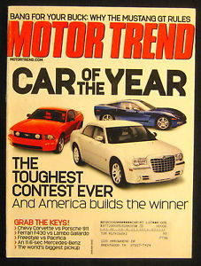

MotorTrend needed a cover page to welcome the fourth generation of Mazda Miata. They wanted something that would reference the first generation Miata. The two cars shared the same ethos, unlike the second and third generation iterations. No Miata, since the original, was so focused on lightweight construction and handling performance.
I believed that the best solution would require finding inspiration from both modern and retro MotorTrend designs. After researching, I found some items that provided me a strong starting point. I decided on a split cover page design, which presented the opportunity to showcase the modern Miata, while paying tribute to the original.
I gathered materials provided by MotorTrend. These were images of vehicles that would be discussed in-depth within the magazine. I decided to incorporate them subtly, making sure that the focus remained on the Miata.
After gathering the materials, I masked the cars from their backgrounds. I played around with placement until I felt I had a good result. I recreated the MotorTrend typeface and placed the logo at the top and bottom of the canvas. The final edits included a texture overlay for the retro half of the cover page and a slick gradient for the modern half. The finished cover page is shown below.
(Click and hold to rotate the cover page)

This project was accomplished using Adobe Photoshop